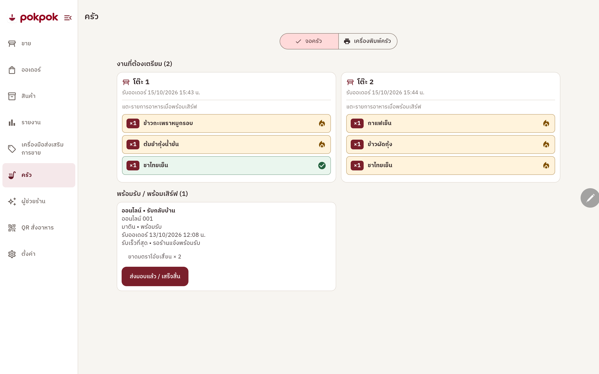

<!doctype html>
<html lang="th">
<meta charset="utf-8">
<meta name="viewport" content="width=device-width,initial-scale=1">
<title>Pokpok • จากโต๊ะถึงครัว</title>
<style>
  @font-face { font-family: Plex; src: url("../../assets/fonts/IBMPlexSansThai-Regular.ttf"); }
  @font-face { font-family: Plex; src: url("../../assets/fonts/IBMPlexSansThai-Bold.ttf"); font-weight: 700; }
  * { box-sizing: border-box; }
  html { font-size: min(1vw, 10.8px); }
  body { margin: 0; background: #ede8e1; font-family: Plex, sans-serif; color: #302425; }
  main { margin: auto; position: relative; overflow: hidden; width: 100rem; height: 125rem; background: #faf6ef; }
  header, footer { position: absolute; left: 6.7rem; right: 6.7rem; display: flex; align-items: center; justify-content: space-between; }
  header { top: 5.6rem; padding-bottom: 2.3rem; border-bottom: 1px solid #cebbb2; }
  header img { width: 16rem; display: block; }
  header span { font-size: 2.25rem; }
  h1 { position: absolute; left: 6.5rem; top: 16rem; margin: 0; font-size: 8.9rem; line-height: 1.16; letter-spacing: -.25rem; }
  h1 strong { color: #7b1e2b; }
  .intro { position: absolute; left: 6.8rem; top: 38.9rem; margin: 0; font-size: 3rem; }
  figure { margin: 0; position: absolute; top: 48rem; left: 5rem; right: 5rem; height: 58rem; border-radius: 2rem; overflow: hidden; background: #751e30; }
  figcaption { position: absolute; top: 3.5rem; left: 4rem; color: #fff5e8; font-size: 2.7rem; }
  .screen { position: absolute; left: 4rem; right: 4rem; bottom: 4rem; height: 43.6rem; overflow: hidden; border: .48rem solid #322a29; border-radius: 1.55rem; background: #f7f4ef; }
  /* Zoom the real kitchen screen to show the full first table ticket on a phone. */
  .screen img { display: block; position: absolute; width: 210rem; left: -39.4rem; top: -19.7rem; }
  footer { top: 111rem; align-items: baseline; }
  footer span { font-size: 2.9rem; }
  footer b { color: #7b1e2b; font-size: 4.4rem; letter-spacing: -.13rem; }
</style>
<main aria-label="ตัวอย่างโฆษณา Pokpok สำหรับ Instagram">
  <header><span>POS สำหรับร้านอาหารและคาเฟ่</span></header>
  <h1>รับออเดอร์ที่โต๊ะ<br><strong>เห็นรายการที่ครัว</strong></h1>
  <p class="intro">ครัวดูได้ว่าโต๊ะไหนสั่งอะไร และเมนูไหนพร้อมเสิร์ฟ</p>
  <figure>
    <figcaption>หน้าจอครัวจากร้านสาธิต</figcaption>
    <div class="screen"></div>
  </figure>
  <footer><span>ดูรายละเอียดที่</span><b>pok-pok.app ↗</b></footer>
</main>
</html>
